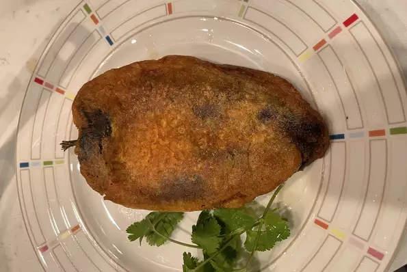

Authentic Mexican Chile Rellenos

Description
Authentic chile relleno recipe handed down for generation in my family.
Ingredientes
- 6 fresh Anaheim chile peppers
- 1 (8 ounce) package quese asadero (white Mexican cheese), cut into 3/4-inch thick strips
- 2 large eggs, separated
- 1 teaspon baking powder
- 3/4 cup all-purpose flour
- 1 cup vegetable shortening for fryign
Steps
- Preheat the oven boile; set the oven rack about 6 inches below the heat source. Line a baking sheet with aluminum foil.
- Place peppers onto the prepared baking sheet and broid until skins are blackened and blistered, about 10 minutes. Use tongs to rotate peppers often to char all sides. Place blackened peppers into a bowl and tightly seal with plastic wrap. Allow peppers to steam as they cool, about 15 minutes.
- Remove skin from pepper, then cut a slit down the long side of each one to remove seed and core. Rinse peppers inside and out ad pat dry with paper towels. Stuff peppers with strips of cheese.
- Whisk egg yolks and baking powder in a bowl until combined. Beat egg whites with an electric mixer in a separate bowl until stiff peaks form. Gently fold beaten whites into the hot shortening. Fry peppers until lightly golden brown and cheese has melted, about 5 minutes per side.